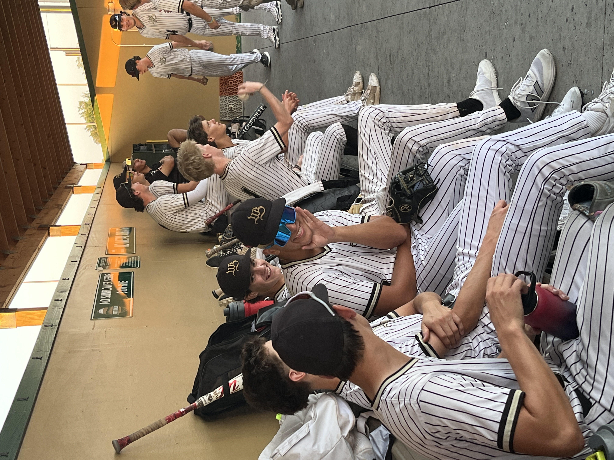
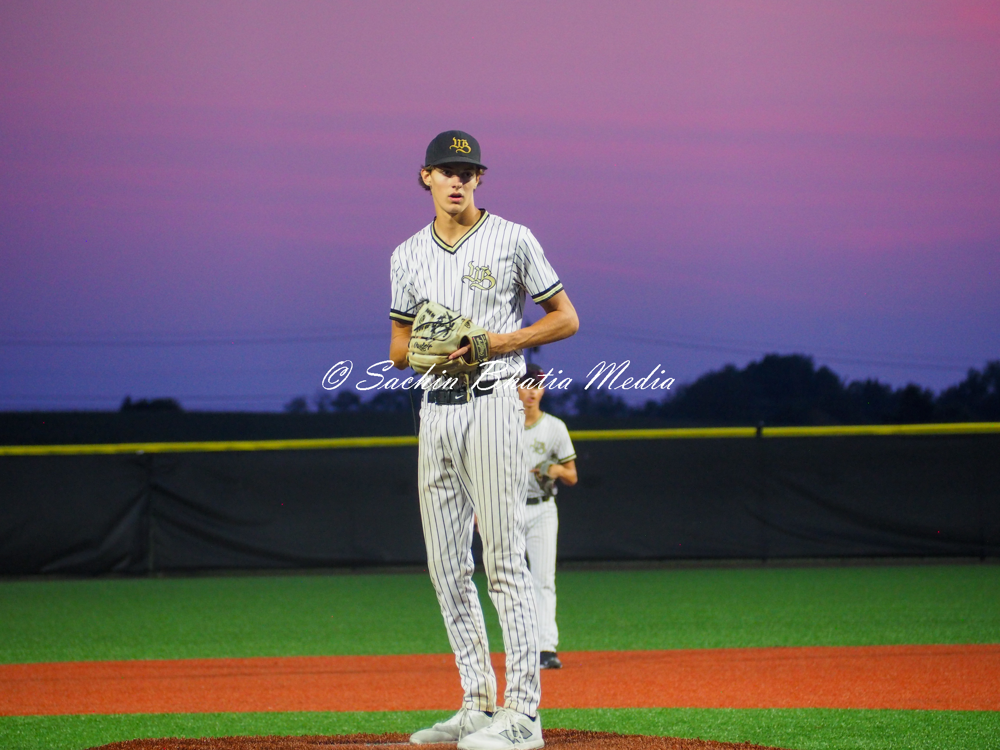
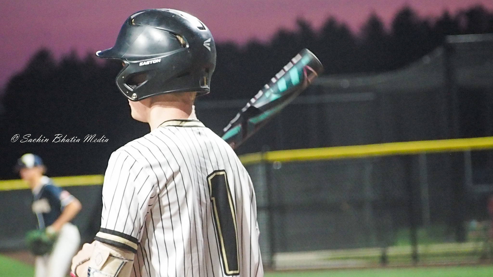
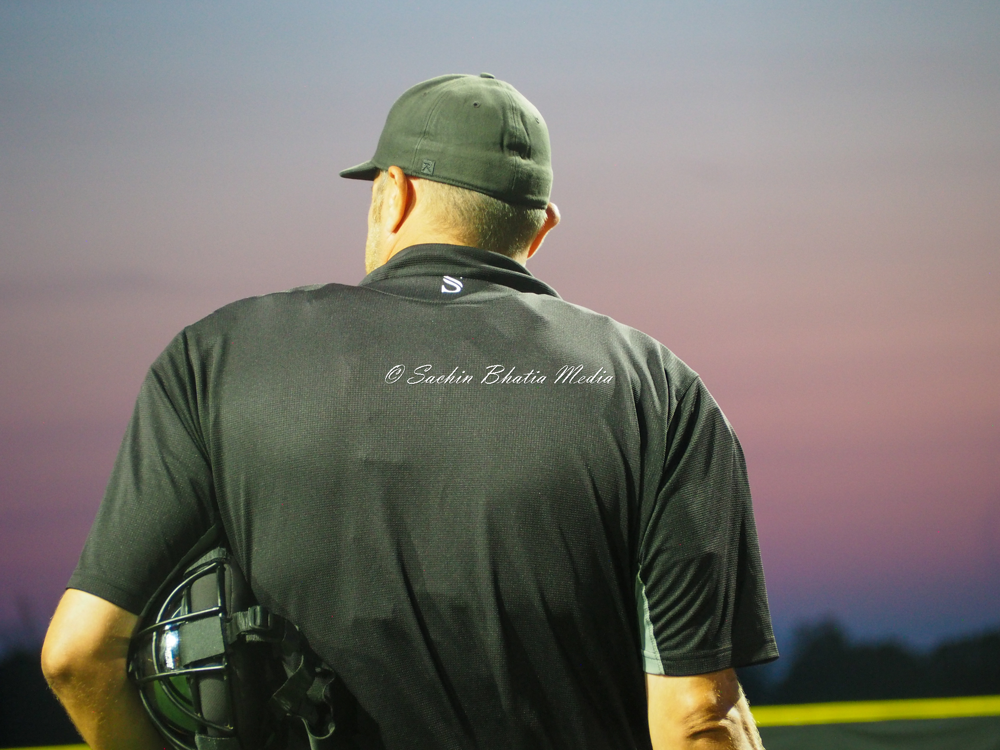
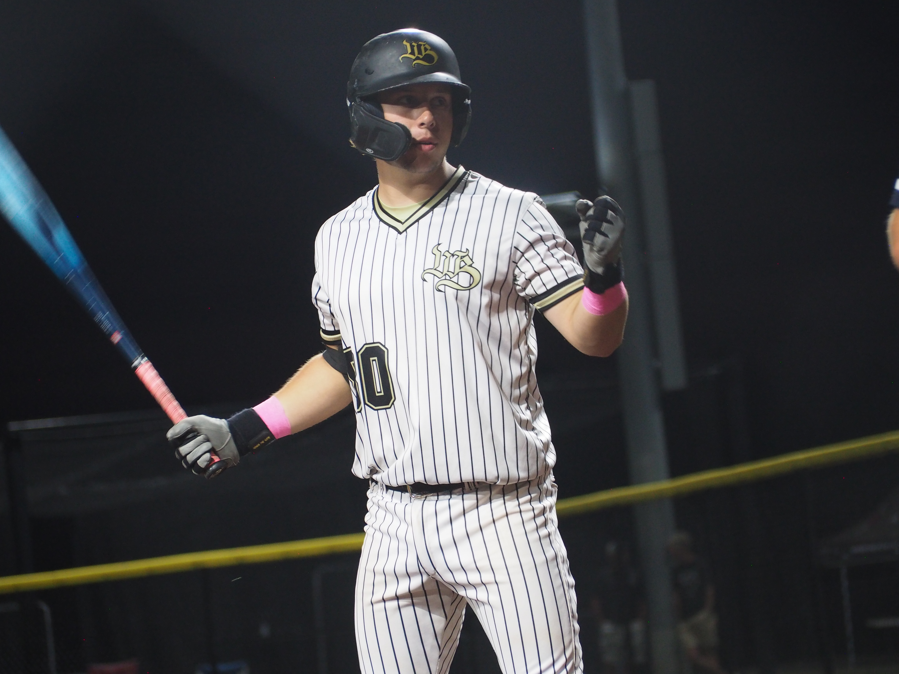
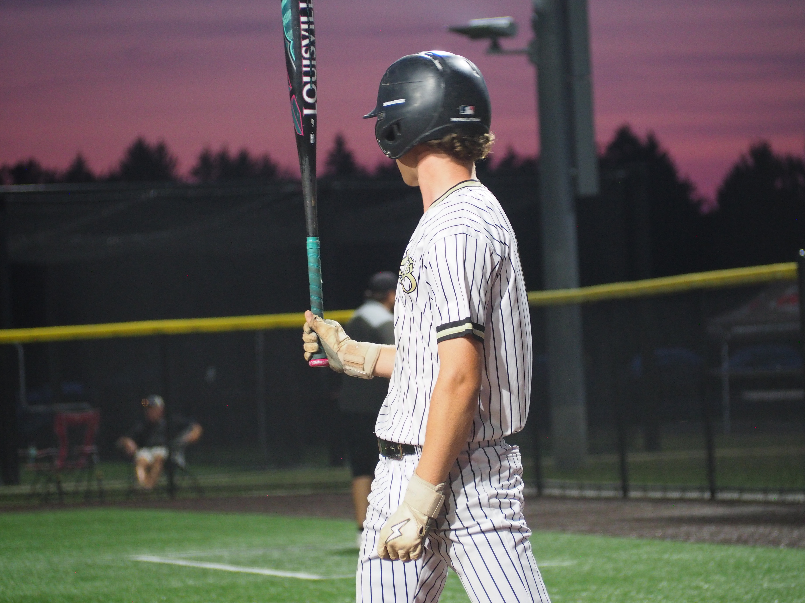
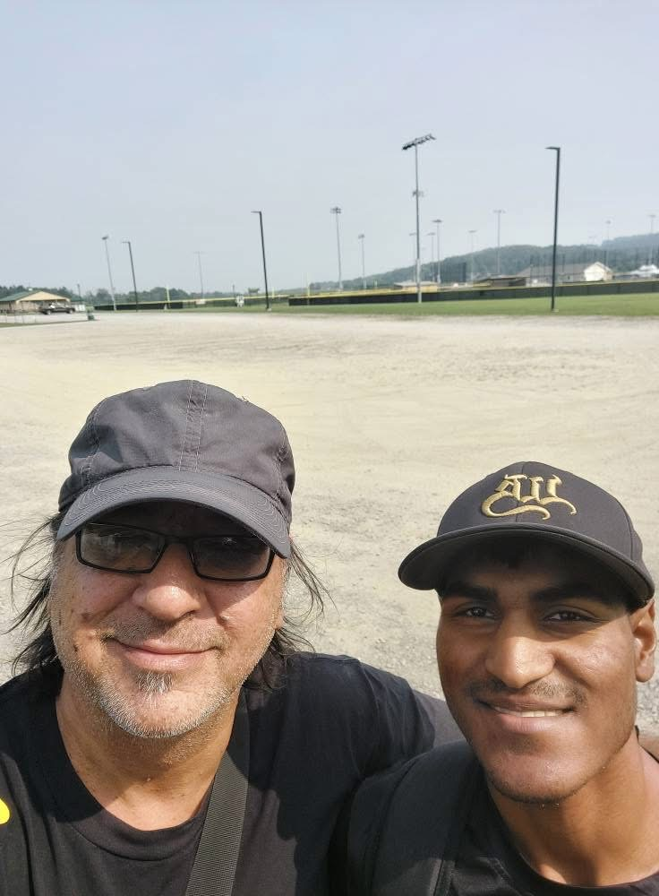
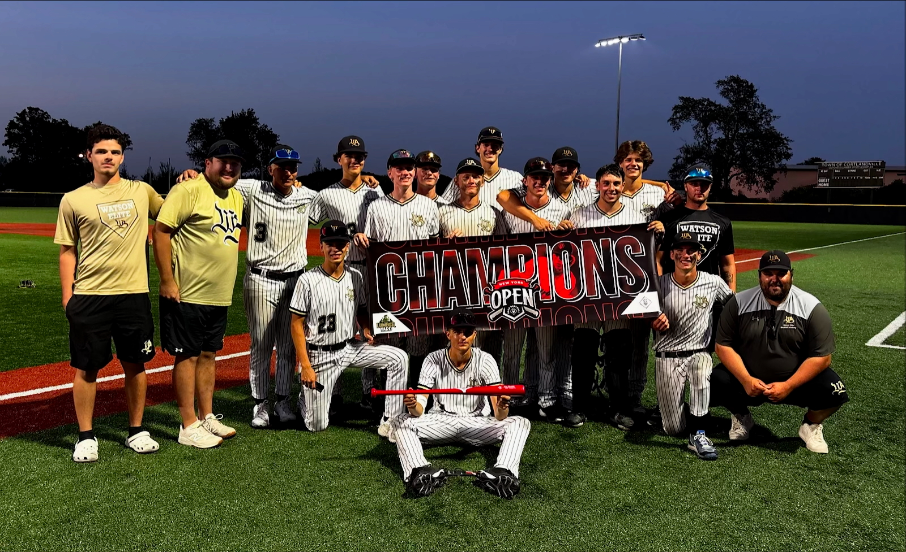

A Camera Holder’s Perspective

It was the night of Saturday August 9 in Cortland, New York. On field four at the Gutchess Lumber Yard Sports Complex, for the Prep Baseball New York Open, something unforgettable was about to happen. It was a tense matchup between the 16U Rhode Island River Dogs and Watson Elite Baseball. I was there filming as a media intern for Watson Elite, based out of Ottawa, Canada. From the first pitch, I knew this was going to be one of the most epic night games I had ever filmed. For Watson Elite, night games rarely happened, so the players were super excited to play a night game under the lights.
The game was full of drama. Players got ejected, coaches got tossed, and the crowd never stopped making noise. The first pitch was thrown at 7:40 in the evening, and as the sun slowly set, the sky turned a glowing purple that seemed to wrap around the whole complex. The sound of parents cheering carried far, all the way to the parking lot. Watson Elite jumped out to a 5 to 2 lead in the fifth inning, but just as quickly the River Dogs fought back and tied it 5 to 5.
I was behind the fence on the third base side of the River Dogs dugout. I could hear their parents yelling at the umpires almost every pitch, calling out for balls and strikes. It was constant, and to me it was both funny and intense because the energy never slowed down. By the seventh inning the game reached a boiling point. Both teams needed a win to advance to the Sunday semi finals. A tie would send both teams home.
Watson Elite came to bat in the bottom of the seventh. The bases were loaded. I gripped my camera tight and told myself to be ready for a walk-off. But the batter struck out, and in that moment, I thought the chance was gone. For a few minutes everyone was frozen, waiting to see if the umpires would end it with the two-hour curfew limit. My heart sank. I thought it might be over. Then the umpires signaled to keep playing, and the game carried on.
In the top of the extra inning the River Dogs scored one run. Their dugout and their parents erupted, screaming and cheering like they had already won. The scoreboard now read 7 to 6, and the pressure was on Watson Elite. I felt the weight of it too. I was nervous but excited because I knew I was filming something that could be huge. For Watson Elite, it was two runs or the season was over.
The players did not back down. The bases became loaded again. I was shaking a little, trying to keep the camera steady. Then Emilio De Matteis came up and blooped a single into the outfield. The game was tied again. The crowd exploded. I felt the rush of adrenaline even though I was not on the field.
But it was still not finished. Watson Elite was down to their final out. Thomas Cuhaci walked to the plate, and I moved closer to the gate near first base. I had my iPhone mounted on top of my camera for vertical shots, and my camera rolling for horizontal. I thought to myself, maybe I am not supposed to go on the field. But another thought inside me was louder. If this turns into a walk off, I cannot miss it.
Thomas swung and hit the ball to right field. The sound of the bat echoed and I captured his bat flip as he trotted to first base. I waited until the players started running onto the field just to make sure the game was indeed over, and once I knew the game was over, I decided to risk it and I opened the latch of the gate, my heart pounding with adrenaline, my hands gripping the camera while trying to keep everything in focus. In front of me Watson Elite stormed the field. Players were yelling, jumping, helmets flying into the air as they chased Thomas down at second base. The whole diamond was chaos and celebration. And I was right there, recording all of it.
I remember immediately running off the field, grabbing my equipment and bag and ran to the van as my uncle had been waiting for me for a while and I didn’t want him waiting any longer. I got in the van, and we went to the hotel, and I then edited the shot, and boom, I uploaded it to the Watson Elite’s Instagram. The team loved the video, and it was reposted countless times by players. And in that moment, I knew I succeeded.
 - This is a photo of me and my uncle. I am so grateful he was able to take me to Cortland to shoot for the team. Without my uncle I wouldn't have been able to capture such a special moment.Thomas later messaged me saying my clip was “unreal" and he also thanked me for capturing his special walk-off moment.
It was an unreal night. It was magic down in Cortland. This was a team win and everyone kept the line moving.
On Sunday Watson Elite 16U won the championship. But for me, that Saturday night will always stand out. The feeling of risking it to get on the field, the tension of every pitch, the joy of capturing that moment, it was more than just a game. It was the shot of a lifetime.
